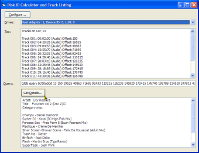

ASPIshim DLL (14K)
ASPIshim DLL (14K)
 VB5 CD Track Listings (63K)
VB5 CD Track Listings (63K)
 VB6 CD Track Listings (60K)
VB6 CD Track Listings (60K)
 26 Jan 2003
26 Jan 2003
First Posted
 Subclassing Without The Crashes
Subclassing Without The Crashes

CD Track Listing Using freedb.org
Accurately retrieve CD Table of Contents using ASPI and get Artist, Title and Track Listing Information automatically
This article demonstrates how to use ASPI to read the table of contents from a CD, and then to use FreeDB's CD look-up service to retrieve artist, title and track listing information for the CD. Along the way it describes some of the alternatives and pitfalls.
About the Sample
Before diving into the detail of how and why everything works, first you might want to have a look at the sample code. Before you start, you need to:
- Make sure you have ASPI installed. If you have a CD Burning utility, such as Nero then its likely that ASPI will be installed. If not, you will want to go to the Adaptec site and download ASPI. You can find it there by choosing Downloads and searching for "ASPI" then downloading the latest version. Make sure that the ASPI DLL (WNASPI32.DLL) is copied to your System directory before starting.
- Copy ASPIShim.DLL from the download into your System directory. This is a Win32 DLL so it doesn't need registering.
Now you're ready to try the code. When you run the sample, the drives combo box will be populated with the available drives on the system. In this version, only the SCSI hardware adaptor, device ID and Logical Device Unit (LUN) are shown for the drives. In a future update, I'll add code to look up the drive letter and drive description using the registry (or the equivalent DeviceIOControl call under NT). If a drive containing a CD is selected, the TOC will be read and populated into the listbox, and at the same time the query to post to FreeDB is generated. If you click the "Get Details" button the sample will connect to FreeDB and download the artist, title and track listing asynchrononously.
Provided classes
The following classes in the sample are provided for re-use:
- cCDDrives
This class uses ASPI to generate a list of CD Drives on the system. For each CD Drive you can retrieve the HostAdaptor, ID, LUN and the TOC object, which returns a cCDToc instance. - cCDToc
This class contains a table of contents for the selected CD (if present). From this object you can get the following:- NoCD: True if no CD in the drive, False otherwise.
- TrackCount: Count of tracks on the CD.
- TrackOffset(track): The offset, in frames (a CD frame is 1/75 of a second) of the track from the start of the CD.
- TrackLengthMinutes(track): The Minutes portion of the length of the track.
- TrackLengthSeconds(track): The Seconds portion of the length of the track.
- TrackLengthFrames(track): The Frames portion of the length of the track.
- LeadOut...: The Offset and Minutes/Seconds/Frames of the lead out of the CD.
- TrackType(track): Whether the track is an audio or data track.
- TotalLengthSeconds: The total length of the Audio CD In seconds.
- CDDBId: The CDDB DiscID for this CD.
- CDDBQuery: A string containing the query to pass to FreeDB.
- cFreeDb
A class which wraps up access to FreeDb using HTTP.- Server: The FreeDB server to connect to. Defaults to "http://freedb.freedb.org/".
- Url: The URL on the FreeDB server which implements the CDDB service. Defaults to "~cddb/cddb.cgi".
- UserName: The name which will be passed to FreeDB in the hello command.
- UserHost: The hostname which will be passed to FreeDB in the hello command.
- AgentName: The name of the application which will be passed to FreeDB.
- AgentVersion: The version of the application which will be passed to FreeDB.
- Command: The FreeDB command to execute.
- Start: Submits the command to FreeDB and waits for a response. When the response is received, the CommandReady event will be fired.
- Abort: Aborts any command which is in progress.
- CommandSubmitted: Whether a command has been submitted to FreeDB and is in progress.
- Response: The (unparsed) response from FreeDB to a successful request.
- QueryResponse: Returns a cFreeDbQueryResponse object containing the details of the query command response.
- ReadResponse: Returns a cFreeDbReadResponse object containing the details of the read command response.
Getting Track-Lists from CDs: An Overview
You will probably already have seen track-list download functionality in other music applications such as WinAmp, MusicMatch and many others. When you insert a CD, and you're connected to the Internet, the application downloads the CD's artist, title and track list, allowing you to see the track names for the CD.
Most commercial applications use the Gracenote CDDB to achieve this functionality. This is easy to use, but unfortunately for almost any distribution you require a licence, which is both costly and restrictive. Luckily there is a completely free alternative service which also maintains a comprehensive database of CD track information at FreeDb.org. This is an open-source service running under the LPGL licence and there are numerous freeware and shareware music players out there which use its facilities, which keeps the database strong.
So what do you need to do to use FreeDB? The complete technical details of their service are posted on the site, but basically you need to do two things:
- Generate a DiscID from the CD
- Send a request to FreeDb.org for the specified disc, and read the results.
I'll cover these in turn.
1. Generating a DiscID
1.1 DiscID Calculation
CDs themselves do not generally have any useful unique identifier which you can use to identify the CD. For this reason various algorithms have been developed which attempt to generate a unique id based on the contents of the CD itself. The FreeDB.org disc ID is generated from the CD's Table of Contents (TOC), the number of tracks on the CD and the total length of the CD. The algorithm in pseudo code is like this:
Function DiscID() As Long
tocSum = 0
For Each track in CDTOC
tocSum = tocSum + AddDigits(track.PositionInSeconds)
Next
firstLastSum = CDTOC.track(0).PositionInSeconds
firstLastSum = firstLastSum - CDTOC.leadOut.PositionInSeconds
DiscId = ((tocSum and &HFF)>>24) Or ((firstLastSum)>>8) Or CDTOC.NumTracks
End Function
Function AddDigits(position)
addDigits = 0
Do While (position > 0)
addDigits = addDigits + (position Mod 10)
position = position \ 10
Loop
End Function
The >> operator is a Right-Shift which basically shifts the bits up by the specified number; so for example (tocSum and &HFF)>>24 will move the first 8 bits of tocSum (since we and with &HFF) from positions 0-7 in the long to positions 24-31.
Implementing this algorithm is not too hard, although you have to be careful in VB because the DiscID needs to be calculated using unsigned arithmetic. In VB, long values are signed, which means the high-bit (bit 31) is used to work out if the number is positive or negative. If you just used VB's + operator, then you can end up with an incorrect result. The download code demonstrates how to perform unsigned addition and shifting correctly.
1.2 Getting a CD's TOC
In order to actually perform the calculation, you see you need the Table of Contents (TOC) for the CD. There are three possible ways of doing this, with varying levels of difficulty:
- Using MCI
The MCI interface can be used to provide a list of CD contents. However, this method is not good for calculating DiscIDs because it only returns a TOC for audio tracks on the CD. If the CD is mixed, and has both audio and data tracks, then the resulting DiscID calculation is incorrect. The advantage of using it is it is simple to implement. - Using the Advanced SCSI Programming Interface (ASPI)
ASPI is a technology provided by Adaptec for Win32 systems. Although it refers to SCSI this appears to be a misnomer as it works fine with IDE drives on the system too; it is probably there for legacy reasons. This interface is available for all Win32 OS versions. - Using DeviceIOCtl
NT/2000/XP systems provide the DeviceIOCtl API which allows you perform SCSI passthrough requests to devices. The disadvantage to using this method is firstly there is no equivalent for Win 9x/SE/ME and secondly you need to be able to open the CD drive for shared reading. If any other application is using the CD you can't do this, whereas ASPI allows querying even when the CD is being used elsewhere.
In order to provide code which works on all OS, I've implemented this example using ASPI. The first thing to note about ASPI is that you can't call ASPI functions directly from VB. Although the API looks straightforward (erm, well, reasonable) all of the calls have been exported using the _cdecl calling convention rather than the _stdcall convention which is supported by VB. This means that you although you can declare the functions in VB when you try to call them you get Run-time Error 49 ("Bad DLL Calling Convention").
There is a Knowledge Base article on this if you're interested in the details (which also provides the bizarre snippet of information that VB actually can succeed in making calls to _cdecl DLLs but only when the application is compiled into an executable, and that this is apparently a bug!).
To work around this you need to create a Win32 DLL which just wraps the _cdecl calls with _stdcall equivalents. Luckily, there is a free-source (LGPL) wrapper DLL called ASPIShim.DLL which was written by Jon F. Zohornacky and posted at Alvise Valsecchi's Web site. This DLL simply wraps the ASPI API calls with _stdcall exported versions.
2. Sending Requests to FreeDB.org
FreeDB itself exposes its API across the internet in two ways: firstly, as a TCP/IP interface and secondly as a HTTP version. Whilst the TCP/IP version allows stateful connections and probably some small performance improvements, the HTTP version is used here. The main reasons for this were:
- The HTTP interface works on Port 80 using text only, hence firewalls are unlikely to be a problem
- Can leverage the MSXML3 ServerXMLHTTP object to easily send and receive data across HTTP.
There are a variety of FreeDB services, however the default (random server selection) can be found at
http://freedb.freedb.org/~cddb/cddb.cgi
This responds to either GET or POST requests for the specified command; both interfaces are identical except that the POST request takes the command as the body of the request whereas the GET request uses the URL's get parameters. Using GET is simpler and is the method adopted here. The GET request takes three parameters:
- cmd - The command to execute, with spaces converted to + signs
- hello - The parameters to the CDDB hello command separated by + signs.
- proto - Which version of the CDDB protocol to use (1 - 5).
A complete list of all the commands you can issue to the server, and the responses, is provided at the freedb website under the Developers section. The articles you need are the "CDDB-protocol documentation" and the "Database-format specification".
As an example, however, the "cddb read" command is used to get the track listing for a CD with a specified genre and a specified DiscId. The command is as follows:
cddb read genre discidTo issue a cddb read command for Ladytron's 604 album, which has a DiscID of d90c9510 and a genre of "misc" (ho hum) you send this:
Note that name, host.com, appname and 1.0 specify details about you and the program you're using.